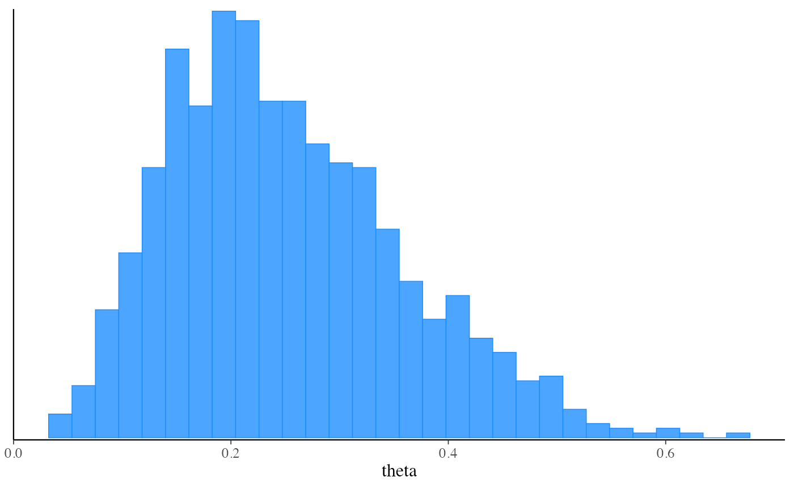

The $sample() method of a CmdStanModel object runs Stan's
main Markov chain Monte Carlo algorithm.
Any argument left as NULL will default to the default value used by the
installed version of CmdStan. See the
CmdStan User’s Guide
for more details.
After model fitting any diagnostics specified via the diagnostics
argument will be checked and warnings will be printed if warranted.
sample(
data = NULL,
seed = NULL,
refresh = NULL,
init = NULL,
save_latent_dynamics = FALSE,
output_dir = NULL,
output_basename = NULL,
sig_figs = NULL,
chains = 4,
parallel_chains = getOption("mc.cores", 1),
chain_ids = seq_len(chains),
threads_per_chain = NULL,
opencl_ids = NULL,
iter_warmup = NULL,
iter_sampling = NULL,
save_warmup = FALSE,
thin = NULL,
max_treedepth = NULL,
adapt_engaged = TRUE,
adapt_delta = NULL,
step_size = NULL,
metric = NULL,
metric_file = NULL,
inv_metric = NULL,
init_buffer = NULL,
term_buffer = NULL,
window = NULL,
fixed_param = FALSE,
show_messages = TRUE,
show_exceptions = TRUE,
diagnostics = c("divergences", "treedepth", "ebfmi"),
cores = NULL,
num_cores = NULL,
num_chains = NULL,
num_warmup = NULL,
num_samples = NULL,
validate_csv = NULL,
save_extra_diagnostics = NULL,
max_depth = NULL,
stepsize = NULL
)(multiple options) The data to use for the variables specified in the data block of the Stan program. One of the following:
A named list of R objects with the names corresponding to variables
declared in the data block of the Stan program. Internally this list is then
written to JSON for CmdStan using write_stan_json(). See
write_stan_json() for details on the conversions performed on R objects
before they are passed to Stan.
A path to a data file compatible with CmdStan (JSON or R dump). See the appendices in the CmdStan guide for details on using these formats.
NULL or an empty list if the Stan program has no data block.
(positive integer(s)) A seed for the (P)RNG to pass to CmdStan.
In the case of multi-chain sampling the single seed will automatically be
augmented by the the run (chain) ID so that each chain uses a different
seed. The exception is the transformed data block, which defaults to
using same seed for all chains so that the same data is generated for all
chains if RNG functions are used. The only time seed should be specified
as a vector (one element per chain) is if RNG functions are used in
transformed data and the goal is to generate different data for each
chain.
(non-negative integer) The number of iterations between
printed screen updates. If refresh = 0, only error messages will be
printed.
(multiple options) The initialization method to use for the variables declared in the parameters block of the Stan program. One of the following:
A real number x>0. This initializes all parameters randomly between
[-x,x] on the unconstrained parameter space.;
The number 0. This initializes all parameters to 0;
A character vector of paths (one per chain) to JSON or Rdump files
containing initial values for all or some parameters. See
write_stan_json() to write R objects to JSON files compatible with
CmdStan.
A list of lists containing initial values for all or some parameters. For MCMC the list should contain a sublist for each chain. For optimization and variational inference there should be just one sublist. The sublists should have named elements corresponding to the parameters for which you are specifying initial values. See Examples.
A function that returns a single list with names corresponding to the
parameters for which you are specifying initial values. The function can
take no arguments or a single argument chain_id. For MCMC, if the function
has argument chain_id it will be supplied with the chain id (from 1 to
number of chains) when called to generate the initial values. See
Examples.
(logical) Should auxiliary diagnostic information
about the latent dynamics be written to temporary diagnostic CSV files?
This argument replaces CmdStan's diagnostic_file argument and the content
written to CSV is controlled by the user's CmdStan installation and not
CmdStanR (for some algorithms no content may be written). The default
is FALSE, which is appropriate for almost every use case. To save the
temporary files created when save_latent_dynamics=TRUE see the
$save_latent_dynamics_files()
method.
(string) A path to a directory where CmdStan should write
its output CSV files. For interactive use this can typically be left at
NULL (temporary directory) since CmdStanR makes the CmdStan output
(posterior draws and diagnostics) available in R via methods of the fitted
model objects. The behavior of output_dir is as follows:
If NULL (the default), then the CSV files are written to a temporary
directory and only saved permanently if the user calls one of the $save_*
methods of the fitted model object (e.g.,
$save_output_files()). These temporary
files are removed when the fitted model object is
garbage collected (manually or automatically).
If a path, then the files are created in output_dir with names
corresponding to the defaults used by $save_output_files().
(string) A string to use as a prefix for the names of
the output CSV files of CmdStan. If NULL (the default), the basename of
the output CSV files will be comprised from the model name, timestamp, and
5 random characters.
(positive integer) The number of significant figures used
when storing the output values. By default, CmdStan represent the output
values with 6 significant figures. The upper limit for sig_figs is 18.
Increasing this value will result in larger output CSV files and thus an
increased usage of disk space.
(positive integer) The number of Markov chains to run. The default is 4.
(positive integer) The maximum number of MCMC chains
to run in parallel. If parallel_chains is not specified then the default
is to look for the option "mc.cores", which can be set for an entire R
session by options(mc.cores=value). If the "mc.cores" option has not
been set then the default is 1.
(integer vector) A vector of chain IDs. Must contain as many
unique positive integers as the number of chains. If not set, the default
chain IDs are used (integers starting from 1).
(positive integer) If the model was
compiled with threading support, the number of
threads to use in parallelized sections within an MCMC chain (e.g., when
using the Stan functions reduce_sum() or map_rect()). This is in
contrast with parallel_chains, which specifies the number of chains to
run in parallel. The actual number of CPU cores used is
parallel_chains*threads_per_chain. For an example of using threading see
the Stan case study
Reduce Sum: A Minimal Example.
(integer vector of length 2) The platform and
device IDs of the OpenCL device to use for fitting. The model must
be compiled with cpp_options = list(stan_opencl = TRUE) for this
argument to have an effect.
(positive integer) The number of warmup iterations to run
per chain. Note: in the CmdStan User's Guide this is referred to as
num_warmup.
(positive integer) The number of post-warmup iterations
to run per chain. Note: in the CmdStan User's Guide this is referred to as
num_samples.
(logical) Should warmup iterations be saved? The default
is FALSE.
(positive integer) The period between saved samples. This should typically be left at its default (no thinning) unless memory is a problem.
(positive integer) The maximum allowed tree depth for the NUTS engine. See the Tree Depth section of the CmdStan User's Guide for more details.
(logical) Do warmup adaptation? The default is TRUE.
If a precomputed inverse metric is specified via the inv_metric argument
(or metric_file) then, if adapt_engaged=TRUE, Stan will use the
provided inverse metric just as an initial guess during adaptation. To turn
off adaptation when using a precomputed inverse metric set
adapt_engaged=FALSE.
(real in (0,1)) The adaptation target acceptance
statistic.
(positive real) The initial step size for the discrete approximation to continuous Hamiltonian dynamics. This is further tuned during warmup.
(string) One of "diag_e", "dense_e", or "unit_e",
specifying the geometry of the base manifold. See the Euclidean Metric
section of the CmdStan User's Guide for more details. To specify a
precomputed (inverse) metric, see the inv_metric argument below.
(character vector) The paths to JSON or
Rdump files (one per chain) compatible with CmdStan that contain
precomputed inverse metrics. The metric_file argument is inherited from
CmdStan but is confusing in that the entry in JSON or Rdump file(s) must be
named inv_metric, referring to the inverse metric. We recommend instead
using CmdStanR's inv_metric argument (see below) to specify an inverse
metric directly using a vector or matrix from your R session.
(vector, matrix) A vector (if metric='diag_e') or a
matrix (if metric='dense_e') for initializing the inverse metric. This
can be used as an alternative to the metric_file argument. A vector is
interpreted as a diagonal metric. The inverse metric is usually set to an
estimate of the posterior covariance. See the adapt_engaged argument
above for details about (and control over) how specifying a precomputed
inverse metric interacts with adaptation.
(nonnegative integer) Width of initial fast timestep adaptation interval during warmup.
(nonnegative integer) Width of final fast timestep adaptation interval during warmup.
(nonnegative integer) Initial width of slow timestep/metric adaptation interval.
(logical) When TRUE, call CmdStan with argument
"algorithm=fixed_param". The default is FALSE. The fixed parameter
sampler generates a new sample without changing the current state of the
Markov chain; only generated quantities may change. This can be useful
when, for example, trying to generate pseudo-data using the generated
quantities block. If the parameters block is empty then using
fixed_param=TRUE is mandatory. When fixed_param=TRUE the chains and
parallel_chains arguments will be set to 1.
(logical) When TRUE (the default), prints all
output during the sampling process, such as iteration numbers and elapsed times.
If the output is silenced then the $output() method of
the resulting fit object can be used to display the silenced messages.
(logical) When TRUE (the default), prints all
informational messages, for example rejection of the current proposal.
Disable if you wish to silence these messages, but this is not usually
recommended unless you are very confident that the model is correct up to
numerical error. If the messages are silenced then the
$output() method of the resulting fit object can be
used to display the silenced messages.
(character vector) The diagnostics to automatically check
and warn about after sampling. Setting this to an empty string "" or
NULL can be used to prevent CmdStanR from automatically reading in the
sampler diagnostics from CSV if you wish to manually read in the results
and validate them yourself, for example using read_cmdstan_csv(). The
currently available diagnostics are "divergences", "treedepth",
and "ebfmi" (the default is to check all of them).
These diagnostics are also available after fitting. The
$sampler_diagnostics() method provides
access the diagnostic values for each iteration and the
$diagnostic_summary() method provides
summaries of the diagnostics and can regenerate the warning messages.
Diagnostics like R-hat and effective sample size are not currently
available via the diagnostics argument but can be checked after fitting
using the $summary() method.
Deprecated and will be removed in a future release.
A CmdStanMCMC object.
The CmdStanR website (mc-stan.org/cmdstanr) for online documentation and tutorials.
The Stan and CmdStan documentation:
Stan documentation: mc-stan.org/users/documentation
CmdStan User’s Guide: mc-stan.org/docs/cmdstan-guide
Other CmdStanModel methods:
model-method-check_syntax,
model-method-compile,
model-method-diagnose,
model-method-expose_functions,
model-method-format,
model-method-generate-quantities,
model-method-optimize,
model-method-sample_mpi,
model-method-variables,
model-method-variational
# \dontrun{
library(cmdstanr)
library(posterior)
library(bayesplot)
color_scheme_set("brightblue")
# Set path to CmdStan
# (Note: if you installed CmdStan via install_cmdstan() with default settings
# then setting the path is unnecessary but the default below should still work.
# Otherwise use the `path` argument to specify the location of your
# CmdStan installation.)
set_cmdstan_path(path = NULL)
#> CmdStan path set to: /Users/jgabry/.cmdstan/cmdstan-2.32.2
# Create a CmdStanModel object from a Stan program,
# here using the example model that comes with CmdStan
file <- file.path(cmdstan_path(), "examples/bernoulli/bernoulli.stan")
mod <- cmdstan_model(file)
mod$print()
#> data {
#> int<lower=0> N;
#> array[N] int<lower=0,upper=1> y;
#> }
#> parameters {
#> real<lower=0,upper=1> theta;
#> }
#> model {
#> theta ~ beta(1,1); // uniform prior on interval 0,1
#> y ~ bernoulli(theta);
#> }
# Data as a named list (like RStan)
stan_data <- list(N = 10, y = c(0,1,0,0,0,0,0,0,0,1))
# Run MCMC using the 'sample' method
fit_mcmc <- mod$sample(
data = stan_data,
seed = 123,
chains = 2,
parallel_chains = 2
)
#> Running MCMC with 2 parallel chains...
#>
#> Chain 1 Iteration: 1 / 2000 [ 0%] (Warmup)
#> Chain 1 Iteration: 100 / 2000 [ 5%] (Warmup)
#> Chain 1 Iteration: 200 / 2000 [ 10%] (Warmup)
#> Chain 1 Iteration: 300 / 2000 [ 15%] (Warmup)
#> Chain 1 Iteration: 400 / 2000 [ 20%] (Warmup)
#> Chain 1 Iteration: 500 / 2000 [ 25%] (Warmup)
#> Chain 1 Iteration: 600 / 2000 [ 30%] (Warmup)
#> Chain 1 Iteration: 700 / 2000 [ 35%] (Warmup)
#> Chain 1 Iteration: 800 / 2000 [ 40%] (Warmup)
#> Chain 1 Iteration: 900 / 2000 [ 45%] (Warmup)
#> Chain 1 Iteration: 1000 / 2000 [ 50%] (Warmup)
#> Chain 1 Iteration: 1001 / 2000 [ 50%] (Sampling)
#> Chain 1 Iteration: 1100 / 2000 [ 55%] (Sampling)
#> Chain 1 Iteration: 1200 / 2000 [ 60%] (Sampling)
#> Chain 1 Iteration: 1300 / 2000 [ 65%] (Sampling)
#> Chain 1 Iteration: 1400 / 2000 [ 70%] (Sampling)
#> Chain 1 Iteration: 1500 / 2000 [ 75%] (Sampling)
#> Chain 1 Iteration: 1600 / 2000 [ 80%] (Sampling)
#> Chain 1 Iteration: 1700 / 2000 [ 85%] (Sampling)
#> Chain 1 Iteration: 1800 / 2000 [ 90%] (Sampling)
#> Chain 1 Iteration: 1900 / 2000 [ 95%] (Sampling)
#> Chain 1 Iteration: 2000 / 2000 [100%] (Sampling)
#> Chain 2 Iteration: 1 / 2000 [ 0%] (Warmup)
#> Chain 2 Iteration: 100 / 2000 [ 5%] (Warmup)
#> Chain 2 Iteration: 200 / 2000 [ 10%] (Warmup)
#> Chain 2 Iteration: 300 / 2000 [ 15%] (Warmup)
#> Chain 2 Iteration: 400 / 2000 [ 20%] (Warmup)
#> Chain 2 Iteration: 500 / 2000 [ 25%] (Warmup)
#> Chain 2 Iteration: 600 / 2000 [ 30%] (Warmup)
#> Chain 2 Iteration: 700 / 2000 [ 35%] (Warmup)
#> Chain 2 Iteration: 800 / 2000 [ 40%] (Warmup)
#> Chain 2 Iteration: 900 / 2000 [ 45%] (Warmup)
#> Chain 2 Iteration: 1000 / 2000 [ 50%] (Warmup)
#> Chain 2 Iteration: 1001 / 2000 [ 50%] (Sampling)
#> Chain 2 Iteration: 1100 / 2000 [ 55%] (Sampling)
#> Chain 2 Iteration: 1200 / 2000 [ 60%] (Sampling)
#> Chain 2 Iteration: 1300 / 2000 [ 65%] (Sampling)
#> Chain 2 Iteration: 1400 / 2000 [ 70%] (Sampling)
#> Chain 2 Iteration: 1500 / 2000 [ 75%] (Sampling)
#> Chain 2 Iteration: 1600 / 2000 [ 80%] (Sampling)
#> Chain 2 Iteration: 1700 / 2000 [ 85%] (Sampling)
#> Chain 2 Iteration: 1800 / 2000 [ 90%] (Sampling)
#> Chain 2 Iteration: 1900 / 2000 [ 95%] (Sampling)
#> Chain 2 Iteration: 2000 / 2000 [100%] (Sampling)
#> Chain 1 finished in 0.0 seconds.
#> Chain 2 finished in 0.0 seconds.
#>
#> Both chains finished successfully.
#> Mean chain execution time: 0.0 seconds.
#> Total execution time: 0.2 seconds.
#>
# Use 'posterior' package for summaries
fit_mcmc$summary()
#> # A tibble: 2 × 10
#> variable mean median sd mad q5 q95 rhat ess_bulk ess_tail
#> <chr> <num> <num> <num> <num> <num> <num> <num> <num> <num>
#> 1 lp__ -7.30 -7.03 0.721 0.380 -8.82 -6.75 1.00 902. 1006.
#> 2 theta 0.247 0.233 0.122 0.129 0.0786 0.470 1.00 762. 712.
# Get posterior draws
draws <- fit_mcmc$draws()
print(draws)
#> # A draws_array: 1000 iterations, 2 chains, and 2 variables
#> , , variable = lp__
#>
#> chain
#> iteration 1 2
#> 1 -6.8 -6.8
#> 2 -6.9 -6.8
#> 3 -7.0 -7.0
#> 4 -6.9 -7.1
#> 5 -6.7 -7.0
#>
#> , , variable = theta
#>
#> chain
#> iteration 1 2
#> 1 0.28 0.21
#> 2 0.19 0.20
#> 3 0.16 0.17
#> 4 0.20 0.36
#> 5 0.25 0.34
#>
#> # ... with 995 more iterations
# Convert to data frame using posterior::as_draws_df
as_draws_df(draws)
#> # A draws_df: 1000 iterations, 2 chains, and 2 variables
#> lp__ theta
#> 1 -6.8 0.28
#> 2 -6.9 0.19
#> 3 -7.0 0.16
#> 4 -6.9 0.20
#> 5 -6.7 0.25
#> 6 -7.1 0.36
#> 7 -9.0 0.55
#> 8 -7.2 0.15
#> 9 -6.8 0.23
#> 10 -7.5 0.42
#> # ... with 1990 more draws
#> # ... hidden reserved variables {'.chain', '.iteration', '.draw'}
# Plot posterior using bayesplot (ggplot2)
mcmc_hist(fit_mcmc$draws("theta"))
#> `stat_bin()` using `bins = 30`. Pick better value with `binwidth`.
# Call CmdStan's diagnose and stansummary utilities
fit_mcmc$cmdstan_diagnose()
#> Processing csv files: /var/folders/s0/zfzm55px2nd2v__zlw5xfj2h0000gn/T/RtmpFBtN6X/bernoulli-202307251438-1-239737.csv, /var/folders/s0/zfzm55px2nd2v__zlw5xfj2h0000gn/T/RtmpFBtN6X/bernoulli-202307251438-2-239737.csv
#>
#> Checking sampler transitions treedepth.
#> Treedepth satisfactory for all transitions.
#>
#> Checking sampler transitions for divergences.
#> No divergent transitions found.
#>
#> Checking E-BFMI - sampler transitions HMC potential energy.
#> E-BFMI satisfactory.
#>
#> Effective sample size satisfactory.
#>
#> Split R-hat values satisfactory all parameters.
#>
#> Processing complete, no problems detected.
fit_mcmc$cmdstan_summary()
#> Inference for Stan model: bernoulli_model
#> 2 chains: each with iter=(1000,1000); warmup=(0,0); thin=(1,1); 2000 iterations saved.
#>
#> Warmup took (0.0040, 0.0040) seconds, 0.0080 seconds total
#> Sampling took (0.011, 0.011) seconds, 0.022 seconds total
#>
#> Mean MCSE StdDev 5% 50% 95% N_Eff N_Eff/s R_hat
#>
#> lp__ -7.3 2.6e-02 0.72 -8.8 -7.0 -6.8 781 35502 1.0
#> accept_stat__ 0.92 8.3e-03 0.13 0.64 0.97 1.0 235 10662 1.0e+00
#> stepsize__ 0.95 7.9e-02 0.079 0.87 1.0 1.0 1.0 46 2.0e+13
#> treedepth__ 1.4 1.1e-02 0.48 1.0 1.0 2.0 1874 85179 1.0e+00
#> n_leapfrog__ 2.5 1.4e-01 1.3 1.0 3.0 3.0 89 4050 1.0e+00
#> divergent__ 0.00 nan 0.00 0.00 0.00 0.00 nan nan nan
#> energy__ 7.8 3.6e-02 1.00 6.8 7.5 9.6 775 35215 1.0e+00
#>
#> theta 0.25 4.3e-03 0.12 0.079 0.23 0.47 796 36197 1.0
#>
#> Samples were drawn using hmc with nuts.
#> For each parameter, N_Eff is a crude measure of effective sample size,
#> and R_hat is the potential scale reduction factor on split chains (at
#> convergence, R_hat=1).
# For models fit using MCMC, if you like working with RStan's stanfit objects
# then you can create one with rstan::read_stan_csv()
# stanfit <- rstan::read_stan_csv(fit_mcmc$output_files())
# Run 'optimize' method to get a point estimate (default is Stan's LBFGS algorithm)
# and also demonstrate specifying data as a path to a file instead of a list
my_data_file <- file.path(cmdstan_path(), "examples/bernoulli/bernoulli.data.json")
fit_optim <- mod$optimize(data = my_data_file, seed = 123)
#> Initial log joint probability = -9.51104
#> Iter log prob ||dx|| ||grad|| alpha alpha0 # evals Notes
#> 6 -5.00402 0.000103557 2.55661e-07 1 1 9
#> Optimization terminated normally:
#> Convergence detected: relative gradient magnitude is below tolerance
#> Finished in 0.1 seconds.
fit_optim$summary()
#> # A tibble: 2 × 2
#> variable estimate
#> <chr> <num>
#> 1 lp__ -5.00
#> 2 theta 0.2
# Run 'variational' method to approximate the posterior (default is meanfield ADVI)
fit_vb <- mod$variational(data = stan_data, seed = 123)
#> ------------------------------------------------------------
#> EXPERIMENTAL ALGORITHM:
#> This procedure has not been thoroughly tested and may be unstable
#> or buggy. The interface is subject to change.
#> ------------------------------------------------------------
#> Gradient evaluation took 9e-06 seconds
#> 1000 transitions using 10 leapfrog steps per transition would take 0.09 seconds.
#> Adjust your expectations accordingly!
#> Begin eta adaptation.
#> Iteration: 1 / 250 [ 0%] (Adaptation)
#> Iteration: 50 / 250 [ 20%] (Adaptation)
#> Iteration: 100 / 250 [ 40%] (Adaptation)
#> Iteration: 150 / 250 [ 60%] (Adaptation)
#> Iteration: 200 / 250 [ 80%] (Adaptation)
#> Success! Found best value [eta = 1] earlier than expected.
#> Begin stochastic gradient ascent.
#> iter ELBO delta_ELBO_mean delta_ELBO_med notes
#> 100 -6.262 1.000 1.000
#> 200 -6.263 0.500 1.000
#> 300 -6.307 0.336 0.007 MEDIAN ELBO CONVERGED
#> Drawing a sample of size 1000 from the approximate posterior...
#> COMPLETED.
#> Finished in 0.1 seconds.
fit_vb$summary()
#> # A tibble: 3 × 7
#> variable mean median sd mad q5 q95
#> <chr> <num> <num> <num> <num> <num> <num>
#> 1 lp__ -7.18 -6.94 0.588 0.259 -8.36 -6.75
#> 2 lp_approx__ -0.515 -0.221 0.692 0.303 -2.06 -0.00257
#> 3 theta 0.263 0.246 0.115 0.113 0.106 0.481
# Plot approximate posterior using bayesplot
mcmc_hist(fit_vb$draws("theta"))
#> `stat_bin()` using `bins = 30`. Pick better value with `binwidth`.

# Specifying initial values as a function
fit_mcmc_w_init_fun <- mod$sample(
data = stan_data,
seed = 123,
chains = 2,
refresh = 0,
init = function() list(theta = runif(1))
)
#> Running MCMC with 2 sequential chains...
#>
#> Chain 1 finished in 0.0 seconds.
#> Chain 2 finished in 0.0 seconds.
#>
#> Both chains finished successfully.
#> Mean chain execution time: 0.0 seconds.
#> Total execution time: 0.3 seconds.
#>
fit_mcmc_w_init_fun_2 <- mod$sample(
data = stan_data,
seed = 123,
chains = 2,
refresh = 0,
init = function(chain_id) {
# silly but demonstrates optional use of chain_id
list(theta = 1 / (chain_id + 1))
}
)
#> Running MCMC with 2 sequential chains...
#>
#> Chain 1 finished in 0.0 seconds.
#> Chain 2 finished in 0.0 seconds.
#>
#> Both chains finished successfully.
#> Mean chain execution time: 0.0 seconds.
#> Total execution time: 0.3 seconds.
#>
fit_mcmc_w_init_fun_2$init()
#> [[1]]
#> [[1]]$theta
#> [1] 0.5
#>
#>
#> [[2]]
#> [[2]]$theta
#> [1] 0.3333333
#>
#>
# Specifying initial values as a list of lists
fit_mcmc_w_init_list <- mod$sample(
data = stan_data,
seed = 123,
chains = 2,
refresh = 0,
init = list(
list(theta = 0.75), # chain 1
list(theta = 0.25) # chain 2
)
)
#> Running MCMC with 2 sequential chains...
#>
#> Chain 1 finished in 0.0 seconds.
#> Chain 2 finished in 0.0 seconds.
#>
#> Both chains finished successfully.
#> Mean chain execution time: 0.0 seconds.
#> Total execution time: 0.3 seconds.
#>
fit_optim_w_init_list <- mod$optimize(
data = stan_data,
seed = 123,
init = list(
list(theta = 0.75)
)
)
#> Initial log joint probability = -11.6657
#> Iter log prob ||dx|| ||grad|| alpha alpha0 # evals Notes
#> 6 -5.00402 0.000237915 9.55309e-07 1 1 9
#> Optimization terminated normally:
#> Convergence detected: relative gradient magnitude is below tolerance
#> Finished in 0.1 seconds.
fit_optim_w_init_list$init()
#> [[1]]
#> [[1]]$theta
#> [1] 0.75
#>
#>
# }